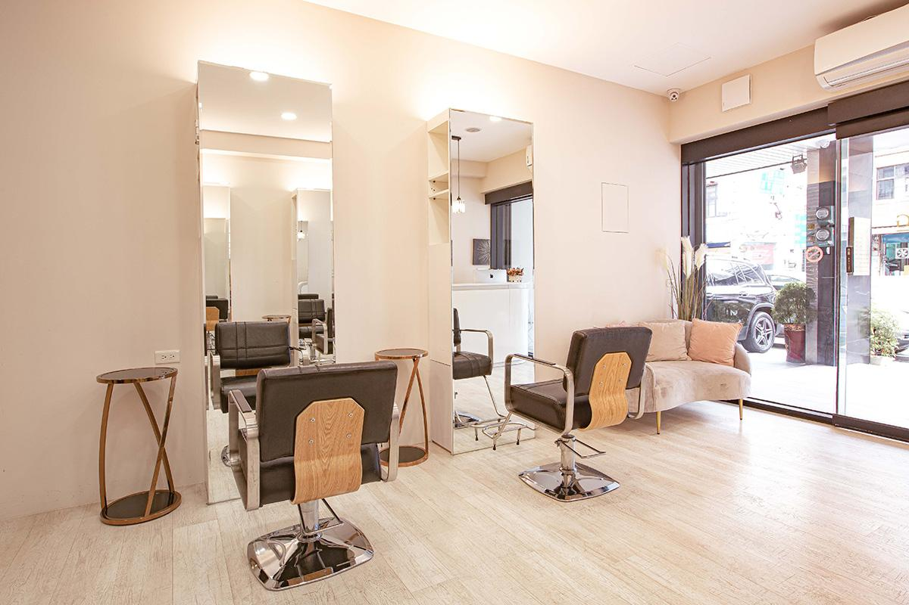

不只是學習技術，更培養對美的專業與服務的溫度。無論想精進接髮技術，或希望加入 TENJING 團隊，都歡迎與我們聊聊。
課程內容將依學習需求與程度安排，從技術邏輯、實際操作到服務流程，協助建立能應用於現場的能力。

如果妳對美業充滿熱情，即使沒有相關經驗，只要願意學習，我們願意一步一步陪伴妳累積技術與經驗。我們希望找到願意長期投入、一起成長的夥伴。
加入官方 LINE，告訴我們妳想了解「技術培訓」或「人才招募」，我們會與妳聯繫。